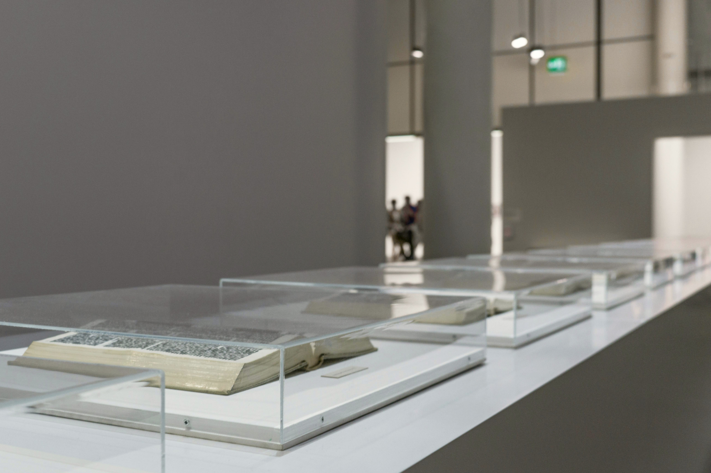

当館の収蔵品について

千葉かくう美術館（MOIC）は、戦後から現代にかけての国内外の美術動向を捉えることを目的に、約7,000点の作品を収蔵しています。絵画、彫刻、写真、映像、インスタレーションなど多様なメディアを含み、近現代美術の広がりと深化をたどることができます。
収蔵の基軸となるのは、社会的・政治的背景を反映した表現、社会的マイノリティの視点、そして実験的な試みに対する関心です。
また、アジアや南米、中東地域をはじめ、欧米中心主義を問い直す地理的な視点からの収集にも力を入れてきました。美術史に向き合い、美術が「誰の視点から語られてきたのか」問いかける展示を数多く開催してきました。
作品の保存・研究・公開を通じて、アーティストの活動の発展に寄与するとともに、社会で絡み合う力を可視化し、対話の起点となることを目指します。